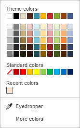

Promena šeme boja
Šeme boja se primenjuju na ceo dokument. U Document Editor-u, možete brzo promeniti izgled dokumenta jer one definišu paletu Tematskih boja za različite elemente dokumenta (font, pozadina, tabele, autoshape-ove, grafikone). Ako ste primenili neku Tematsku boju na elemente dokumenta, a zatim izaberete drugačiju šemu boja, boje primenjene u dokumentu će se automatski promeniti u skladu sa novom šemom.
Da promenite šemu boja, kliknite strelicu pored ikone Šema boja na kartici Izgled alatne trake i izaberite željenu šemu boja sa liste: Aspect, Blue Green, Blue II, Blue Warm, Blue, Grayscale, Green Yellow, Green, Marquee, Median, Office 2007-2010, Office 2013-2022, Office, Orange Red, Orange, Paper, Red Orange, Red Violet, Red, Slipstream, Violet II, Violet, Yellow Orange, Yellow i New Office. Izabrana šema boja biće istaknuta u listi.

Nakon što izaberete željenu šemu boja, možete odabrati i druge boje u prozoru palete boja koji odgovara elementu dokumenta kojem želite primeniti boju. Za većinu elemenata dokumenta, prozor palete boja možete otvoriti klikom na obojeni kvadrat na desnoj bočnoj traci kada je željeni element selektovan. Za font, ovaj prozor se može otvoriti klikom na strelicu pored ikone Boja fonta na kartici Početak alatne trake. Dostupne palete su:

- Tematske boje - boje koje odgovaraju izabranoj šemi boja dokumenta.
- Standardne boje - skup podrazumevanih boja. Izabrana šema boja na njih ne utiče..
-
Takođe možete primeniti prilagođenu boju koristeći dve opcije:
- Kapilar - koristite ovu opciju da odaberete boju klikom direktno u dokumentu.
-
Više boja - kliknite na ovu opciju ako željena boja nije dostupna u paletama. Odaberite opseg boja pomeranjem vertikalnog klizača i postavite specifičnu boju pomeranjem selektora unutar velikog kvadratnog polja. Kada odaberete boju, odgovarajuće RGB i sRGB vrednosti biće prikazane u poljima sa desne strane. Boju možete definisati i unosom numeričkih vrednosti u polja R, G, B ili unosom sRGB heksadecimalnog koda u polje označeno znakom #. Izabrana boja se pojavljuje u polju Nova (New). Ako je objekat prethodno imao prilagođenu boju, ona se prikazuje u polju Trenutna (Current) radi poređenja. Kada definišete boju, kliknite Dodaj (Add):

Prilagođena boja će biti primenjena na selektovani element i dodata u Nedavne boje paletu